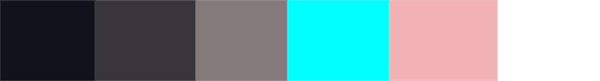
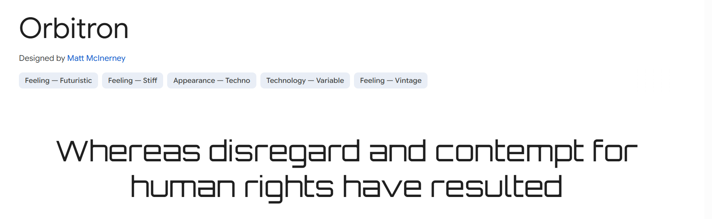
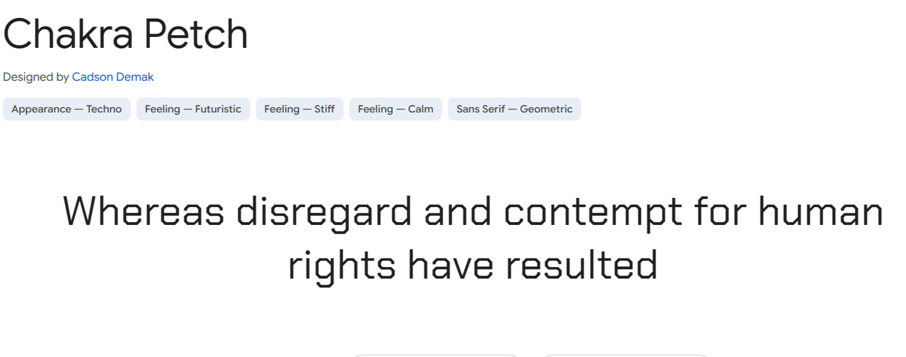
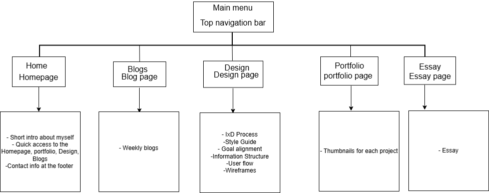
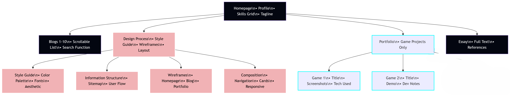
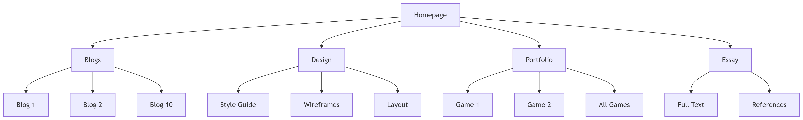

Design Process
Goal Alignment
The goal for this website is to curate a space that reflects who I am as a digital artist and designer inspired by the digital world. The theme I am aiming for is a tech-forward, and futuristic aesthetic that offers a sleek and appealing look. This website highlights my design process and is intended for potential collaborators or those interested in engaging with my work in a clean, tech-forward space. I want users to find my website to be easy to navigate through, without feeling overwhemed.
Style Guide
Visual Aesthetic
This website should present a clean, modern and tech tech-forward aesthetic with subtle sci-fi elements. The use of my colours is to provide a sleek yet futuristic vibe. Visually, it should have clean lines, subtle gradients or glows, and space to breathe. Think: sleek, cyber-cool, and modern. The futuristic feel of the website is intentional as it positions my portfolio within the evovling space of digital arts and UI/UX design, which today are inherently forward looking fields.
Colour Palette
I chose a palette that aligns with the sci-fi theme, using a dark background with light, glowing accents to create a holographic effect. These contrasting tones enhance readability while highlighting key elements like titles. The design choice is inspired by futuristic visuals often seen in sci-fi movies. I also used glow elements to give the website a modern, high-tech feel that not only adds a sense of immersion. Using light accents on a darker parts enhances visual clarity.
Colour relationships
The use of my dark colours against lighter colours create contrast, especially in the UI elements such as the header, the navigation bar and enhances visibility of content and navigation.By framing key sections with opposing tones, I want to allow for users to easily differentiate between the navigation, content and interactive features as this improves the overal user experience and accessibility.
The use of pink adds playfulness, my feminine side and warmth to my techy design, so I will use them as accent or highlight colours.I choose soft pinks (#f1b2b5) to also evoke a sleek atmosphere. I also chose this colour as a representation of my identity in a space where tech design often leans into neutral tones or masculine tones. The soft pink (#f1b2b5) are used to highlight section titles and links.
For a Neutral balance, I tend to use greys and whites to help ground my layout, and giving breathing room between components. The grey colours offer balance where i used vibrant accents and darker background. By using the grey colour, I want to design from feeling cluttered and to make sure that there's a breathing space between components. The use of white colour supports a clean, modern interface.
Fonts
For a sleek, futuristic look, I’m using Orbitron font for all headings and navigation bar and Chakra Petch for body text. Initially in my website i had chosed Orbitron font to use site-wide but it wasn't user friendly and it hurt the eyes of users in longer body text. Obitron, a geometric sans-serif typeface designed specifically for display purposes,reinforces the sci-fi and the digital theme I was aiming for.Its clean,tech-inspired letterforms pair well with the UI elements on my site such as in the titiles and section headers. Since Oribtron is designed as a font display, to maintain readability I limited its use to headings to avoid compromising readability.
To support user-friendly view for the site and to maintain the tech-theme I was aiming for, I used Chakra Petch as the body font. This font maintains a futuristic tone while offering better readability at smaller sizes. It also compliments Oribtrons sharp, modern style but suitable for body text.To enhance readability and to reduce eye strain I adjusted the font size and line space. The pairing of the two fonts create a balanced typographic hierarchy.
Information Structure
The initial Information Structure of my website
Updated Information Structure:
User Flow
This is a basic user flow of this website.

Updated basic user flow of the website
Composition and layout
Structure
Consists of a classic website layout, top navigation bar containing logo and menu(converts to hamburger menu on mobile), main content and footer(contains links to contact details)
Navigation System
Desktop (More than >800px):Horizontal menu bar with active page highlighting
Logo aligned left, navigation items right
Hamburger menu triggers dropdown navigation
Implemented via CSS checkbox hack for no-JS functionality
Search Bar (Blog Page)
Text input field above blog listings
Filters articles by title/content using JavaScript
Shows "No results" message when no matches exist
Index Sidebar (Design Page)
Enables instant jumping between sections via smooth scrolling
Visually distinct from main content with hover effects
Wireframes
-
Homepage
The top of the page includes a navigation bar for easy access to different sections. Below it is a welcome text and a brief intro about me, followed by a photo. Contact details will be placed at the footer or near the bottom of the main section.
Another idea is to also have quick access icons at the bottom, in addition to the top nav bar.

-
Blog Page
This wireframe represents the layout for the blog page. It includes space for post previews, images, and possibly filters or categories to explore blog topics.

-
Portfolio Page
The navigation bar will be at the top right. This page will showcase both my artwork and games, using images to represent each category.
Alternatively, it may be split into two sections—one for drawings and another for games.

-
Design Page
This wireframe outlines the design page, which highlights my design process including goal alignment, color palette, font choices, and wireframes.